资源
仓库地址：DLR-RM/BlenderProc: A procedural Blender pipeline for photorealistic training image generation (github.com)，下载到本地，用 python 打开，解释器使用之前创建的 blender 环境。
课程
Auto shading
Usage
blenderproc run examples/advanced/auto_shading/main.py examples/advanced/auto_shading/camera_position examples/advanced/auto_shading/scene.blend examples/advanced/auto_shading/outputexamples/advanced/auto_shading/main.py: path to the main python file to run.examples/advanced/auto_shading/camera_position: text file with parameters of camera positions.examples/advanced/auto_shading/scene.blend: path to the blend file with the basic scene.examples/advanced/auto_shading/output: path to the output directory.
Visualization
blenderproc vis hdf5 examples/advanced/auto_shading/output/0.hdf5{kind=link}
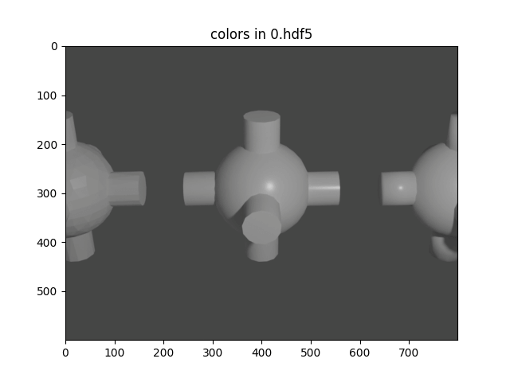
Code
# Find the object with name "Sphere"
sphere = bproc.filter.one_by_attr(objs, "name", "Sphere")
# Set it to AUTO shading, so all angles greater than 45 degrees will be shaded flat.
sphere.set_shading_mode("auto", 45)
# Find the object with name "Sphere.001"
other_sphere = bproc.filter.one_by_attr(objs, "name", "Sphere.001")
# Set it to smooth shading, so all angles will be shaded flat.
other_sphere.set_shading_mode("smooth")-
通过调用 bproc.filter.one_by_attr(objs, "name", "Sphere") 函数找到名为 "Sphere" 的物体，并将其赋值给变量 sphere。
-
调用 sphere.set_shading_mode("auto", 45) 函数，将 sphere 对象的着色模式设置为 AUTO，表示自动根据面的角度决定使用平坦或平滑着色。同时给定一个阈值参数 45，即当面的角度大于 45 度时，该面将使用平坦着色，否则使用平滑着色。
-
通过调用 bproc.filter.one_by_attr(objs, "name", "Sphere.001") 函数找到名为 "Sphere.001" 的物体，并将其赋值给变量 other_sphere。
-
调用 other_sphere.set_shading_mode("smooth") 函数，将 other_sphere 对象的着色模式设置为 SMOOTH，表示所有面都使用平滑着色。
Camera Depth of Field
Usage
blenderproc run examples/advanced/camera_depth_of_field/main.py examples/resources/scene.obj examples/advanced/camera_depth_of_field/outputexamples/advanced/camera_depth_of_field/main.py: path to the main python file to run.examples/resources/scene.obj: path to the object file with the basic scene.examples/advanced/camera_depth_of_field/output: path to the output directory.
Visualization
blenderproc vis hdf5 examples/advanced/camera_depth_of_field/output/0.hdf5{kind=link}
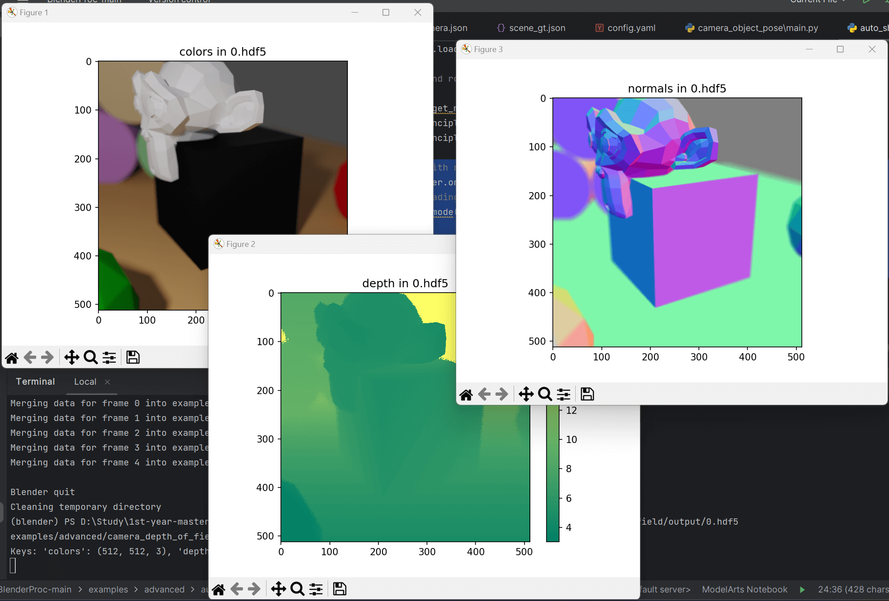
Code
设置视点：
# Create an empty object which will represent the cameras focus point
focus_point = bproc.object.create_empty("Camera Focus Point")
focus_point.set_location([0.5, -1.5, 3])# define the camera intrinsics
bproc.camera.set_resolution(512, 512)
# Set the empty object as focus point and set fstop to regulate the sharpness of the scene
bproc.camera.add_depth_of_field(focus_point, fstop_value=0.25)首先，通过调用 bproc.camera.set_resolution(512, 512) 函数设置相机分辨率为 512x512 像素。
接着，通过调用 bproc.camera.add_depth_of_field(focus_point, fstop_value=0.25) 函数来添加景深效果。其中，focus_point 表示景深的焦点，即相机聚焦的对象（通常为场景中心）。fstop_value 参数控制景深的浅深范围，值越小，景深效果越明显。在本例中，fstop_value 被设置为 0.25，表明所拍摄的场景会呈现出比较明显的景深效果。
COCO annotations
Usage
blenderproc run examples/advanced/coco_annotations/main.py examples/resources/camera_positions examples/advanced/coco_annotations/scene.blend examples/advanced/coco_annotations/outputexamples/advanced/coco_annotations/main.py: path to the main python file to run.examples/resources/camera_positions: text file with parameters of camera positions.examples/advanced/coco_annotations/scene.blend: path to the blend file with the basic scene.examples/advanced/coco_annotations/output: path to the output directory.
Visualization
使用 blenderproc 可视化 COCO 数据集格式的命令示例：
blenderproc vis coco [-i <image index>] [-c <coco annotations json>] [-b <base folder of coco json and image files>]生成 COCO 数据集形式的文件：
{kind=link}
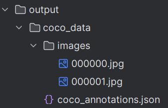
coco_annoatations.json 里的内容（感觉存了一段乱七八糟的东西）：
{
"info": {
"description": "coco_annotations",
"url": "https://github.com/waspinator/pycococreator",
"version": "0.1.0",
"year": 2020,
"contributor": "Unknown",
"date_created": "2023-06-04 23:59:39.563796"
},
"licenses": [
{
"id": 1,
"name": "Attribution-NonCommercial-ShareAlike License",
"url": "http://creativecommons.org/licenses/by-nc-sa/2.0/"
}
],
"categories": [
{
"id": 1,
"supercategory": "coco_annotations",
"name": "Suzanne"
},
...
{
"id": 9,
"supercategory": "coco_annotations",
"name": "Cube.001"
}
],
"images": [
{
"id": 0,
"file_name": "images/000000.jpg",
"width": 512,
"height": 512,
"date_captured": "2023-06-04 23:59:39.563796",
"license": 1,
"coco_url": "",
"flickr_url": ""
},
{
"id": 1,
"file_name": "images/000001.jpg",
"width": 512,
"height": 512,
"date_captured": "2023-06-04 23:59:39.672089",
"license": 1,
"coco_url": "",
"flickr_url": ""
}
],
"annotations": [
{
"id": 1,
"image_id": 0,
"category_id": 1,
"iscrowd": 0,
"area": 8330,
"bbox": [
184,
98,
144,
114
],
"segmentation": {
"counts": [
94341,
...
94583
],
"size": [
512,
512
]
},
"width": 512,
"height": 512
},
...
{
"id": 16,
"image_id": 1,
"category_id": 9,
"iscrowd": 0,
"area": 25473,
"bbox": [
0,
456,
512,
56
],
"segmentation": {
"counts": [
460,
...
34
],
"size": [
512,
512
]
},
"width": 512,
"height": 512
}
]
}在本例中：
blenderproc vis coco -i 1 -c coco_annotations.json -b examples/advanced/coco_annotations/output/coco_data然后你就会喜提报错：
AttributeError: module 'numpy' has no attribute 'bool'.
`np.bool` was a deprecated alias for the builtin `bool`. To avoid this error in existing code, use `bool` by itself. Doing this will not modify any behavior and is safe. If you specifically wanted the numpy scalar type, use `np.bool_` here.
The aliases was originally deprecated in NumPy 1.20; for more details and guidance see the original release note at:
https://numpy.org/devdocs/release/1.20.0-notes.html#deprecations. Did you mean: 'bool_'?从 vis_coco_annotation.py 里找到这行 np.bool_，把它改成 bool_：
{kind=link}
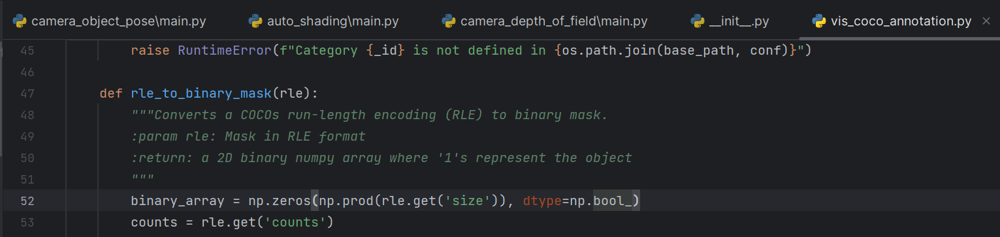
重新开跑！
{kind=link}
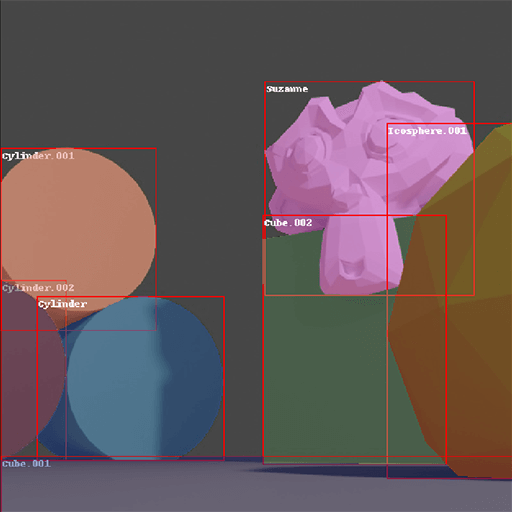
Code
# Set some category ids for loaded objects
for j, obj in enumerate(objs):
obj.set_cp("category_id", j + 1)要创建 COCO 标注，我们需要渲染实例和类别映射。类别是根据自定义属性 "category_id" 定义的，该属性必须为每个实例预先定义。可以像上面一样通过自定义属性或在加载器中设置 category_id，也可以直接在 .blend 文件中定义。同时，我们还将 "name" 添加到映射中，以便稍后在 COCO 标注写入器中使用对象的名称为类别进行标记。
bproc.renderer.enable_segmentation_output(map_by=["category_id", "instance", "name"])调用 bproc.renderer.enable_segmentation_output(map_by=["category_id", "instance", "name"]) 函数激活分割渲染功能。
其中，"category_id"、"instance" 和 "name" 分别表示三种不同的标记方式，即按类别、物体实例和名称进行标记。
这个函数的作用是将场景中的每个物体按照所选的标记方式标记，并将标记信息存储到渲染结果中。例如，如果选择 "category_id" 标记，则每个物体会被分配一个唯一的整数 ID，表示其所属的类别。
# Write data to coco file
bproc.writer.write_coco_annotations(os.path.join(args.output_dir, 'coco_data'),
instance_segmaps=data["instance_segmaps"],
instance_attribute_maps=data["instance_attribute_maps"],
colors=data["colors"],
color_file_format="JPEG")使用 bproc.writer.write_coco_annotations()生成 COCO 数据集。
此函数将注释存储在 coco_annotations.json 中。可选地，您可以在 writer.CocoAnnotationsWriter 配置中设置 "supercategory": "<some_supercategory>"，以通过先前分配的自定义属性 "supercategory" 过滤对象。
通过调用 bproc.writer.write_coco_annotations() 函数将场景中的分割信息和属性信息写入 COCO 格式的注释文件中。
其中：
- os.path.join(args.output_dir, 'coco_data') 是注释文件的保存路径
- instance_segmaps、instance_attribute_maps 和 colors 分别表示物体实例分割图、物体属性图和物体颜色信息，这些信息都是从渲染结果中提取得到的
- color_file_format 参数表示颜色信息保存格式，这里被设置为 JPEG 格式。
- 此函数会自动将提供的分割信息和属性信息转换为 COCO 格式，并将其保存到指定路径下的注释文件中。
bproc.writer.write_coco_annotations()：
def write_coco_annotations(output_dir: str, instance_segmaps: Optional[List[np.ndarray]] = None,
instance_attribute_maps: Optional[List[dict]] = None,
colors: Optional[List[np.ndarray]] = None, color_file_format: str = "PNG",
mask_encoding_format: str = "rle", supercategory: str = "coco_annotations",
append_to_existing_output: bool = True, segmap_output_key: str = "segmap",
segcolormap_output_key: str = "segcolormap", rgb_output_key: str = "colors",
jpg_quality: int = 95, label_mapping: Optional[LabelIdMapping] = None,
file_prefix: str = "", indent: Optional[Union[int, str]] = None):此函数按以下步骤编写 COCO 注释：
- 定位分割图像
- 定位 RGB 映射
- 定位 seg mappings
- 读取颜色映射
- 对于每个帧，编写 coco 注释
参数解释如下：
output_dir：输出目录，用于编写 coco 注释instance_segmaps：实例分割映射的列表instance_attribute_maps：每帧的映射，具有 idx、class 和（可选）supercategory/bop_dataset_namecolors：颜色图像的列表。不支持立体图像，请依次输入左和右输入。color_file_format：保存颜色图像的格式mask_encoding_format：二进制掩模的编码格式。默认值为 'rle'。可用值：'rle'、'polygon'supercategory：要过滤的数据集/超类别名称，例如通过 'bop_dataset_name' 设定的特定 BOP 数据集集合或具有指定 'cp_supercategory' 的任何已加载对象append_to_existing_output：如果为 true，且输出目录中已经有 coco_annotations.json 文件，则新的 coco 注释将被追加到现有文件中。此外，rgb 图像将被命名，以避免冲突。segmap_output_key：分割图像的输出键。应该与 SegMapRenderer 模块的输出键相同。默认值为 'segmap'。segcolormap_output_key：为对象名称/类别对应关系注册 CSV 文件的输出键。应该与 SegMapRenderer 模块的 colormap_output_key 相同。默认值为 'segcolormap'。rgb_output_key：RGB 图像的输出键。应该与 RgbRenderer 模块的输出键相同。默认值为 'colors'。jpg_quality：所需的 jpg 编码质量级别label_mapping：用于基于其 ID 对类别进行标记的标签映射。如果未给定 None，则使用 csv 文件中的name字段，或者（如果不存在）使用类别 ID 本身。file_prefix：图像文件名的可选前缀indent：如果缩进是非负整数或字符串，则注释输出将以该缩进级别进行漂亮的打印。缩进级别为 0、负数或 "" 仅插入换行符。None（默认值）选择最紧凑的表示。使用正整数缩进每个层级缩进那么多空格。如果缩进是字符串（例如 "\t"），那么该字符串用于缩进每个级别。
# 对传入的三个可选参数进行类型检查和处理，确保它们都是列表类型。如果为 None，就改为空列表
instance_segmaps = [] if instance_segmaps is None else list(instance_segmaps)
colors = [] if colors is None else list(colors)
#（怎么代码风格跟上面的不太一样？）
if instance_attribute_maps is None:
instance_attribute_maps = []
# 检查 colors[0] 是否是四维数组，如果是，则抛出 ValueError 异常。这是因为 BlenderProc 目前不支持渲染立体图像，只能生成左右视图分别的图像/分割图像。
if len(colors) > 0 and len(colors[0].shape) == 4:
raise ValueError("BlenderProc currently does not support writing coco annotations for stereo images. "
"However, you can enter left and right images / segmaps separately.")# Create output directory
# 创建输出目录，其中 'images' 目录用于存储转换后的图像。如果该目录已经存在，则不会创建新目录。
os.makedirs(os.path.join(output_dir, 'images'), exist_ok=True)# 这些代码块用于查找渲染时生成的 RGB 图像、实例分割图像和属性映射文件的路径
if not instance_segmaps:
# 如果 instance_segmaps 列表是空的，则该代码会查找实例分割图像的路径，使用 Utility.find_registered_output_by_key() 方法查找已注册的输出
# Find path pattern of segmentation images
segmentation_map_output = Utility.find_registered_output_by_key(segmap_output_key)
if segmentation_map_output is None:
# 如果找不到 key 为 segmap_output_key 的输出，则引发 RuntimeError 异常，提示用户在运行 write_coco_annotations() 函数之前先运行 SegMapRenderer 模块
raise RuntimeError(f"There is no output registered with key {segmap_output_key}. Are you sure you "
f"ran the SegMapRenderer module before?")
if not colors:
# Find path pattern of rgb images
# 如果 colors 列表为空，则该代码会查找 RGB 图像的路径
rgb_output = Utility.find_registered_output_by_key(rgb_output_key)
if rgb_output is None:
# 如果找不到 key 为 rgb_output_key 的输出，则引发 RuntimeError 异常，提示用户在运行 write_coco_annotations() 函数之前先运行 RgbRenderer 模块
raise RuntimeError(f"There is no output registered with key {rgb_output_key}. Are you sure you "
f"ran the RgbRenderer module before?")
if not instance_attribute_maps:
# Find path of name class mapping csv file
# 如果 instance_attribute_maps 列表为空，则该代码会查找实例分割图像到名称、类别标签的映射文件的路径
segcolormap_output = Utility.find_registered_output_by_key(segcolormap_output_key)
if segcolormap_output is None:
# 如果找不到 key 为 segcolormap_output_key 的输出，则引发 RuntimeError 异常，提示用户在运行 write_coco_annotations() 函数之前先运行 SegMapRenderer 模块，并将 map_by 参数设置为 instance
raise RuntimeError(f"There is no output registered with key {segcolormap_output_key}. Are you sure you "
f"ran the SegMapRenderer module with 'map_by' set to 'instance' before?")# 用于确定输出的 COCO 格式注释文件的路径，并在需要追加输出时计算图像编号的偏移量
coco_annotations_path = os.path.join(output_dir, "coco_annotations.json")
# Calculate image numbering offset, if append_to_existing_output is activated and coco data exists
if append_to_existing_output and os.path.exists(coco_annotations_path):
# 如果 append_to_existing_output 为 True，且文件系统中存在名为 'coco_annotations.json' 的文件，则将其加载到内存中
with open(coco_annotations_path, 'r', encoding="utf-8") as fp:
existing_coco_annotations = json.load(fp)
# 获取已存在图像 ID 的最大值，并加 1 作为图像编号的偏移量。这可以确保新生成的注释不会与已有的注释文件重复。
image_offset = max(image["id"] for image in existing_coco_annotations["images"]) + 1
else:
# 如果 append_to_existing_output 参数为 False 或没有找到现有的注释文件，则图像编号的偏移量为 0，并且 existing_coco_annotations 变量设置为 None
image_offset = 0
existing_coco_annotations = None# collect all RGB paths
new_coco_image_paths = []
# collect all mappings from csv (backwards compat)
segcolormaps = []
# collect all instance segmaps (backwards compat)
inst_segmaps = []
# for each rendered frame
# 遍历从 bpy.context.scene.frame_start 到 bpy.context.scene.frame_end 的每一帧
for frame in range(bpy.context.scene.frame_start, bpy.context.scene.frame_end):
# 如果 instance_attribute_maps 列表为空，则读取映射文件（segcolormap_output）以获取对象名称/类别到整数的映射，将其存储在 segcolormaps 列表中
if not instance_attribute_maps:
# read colormappings, which include object name/class to integer mapping
segcolormap = []
with open(segcolormap_output["path"] % frame, 'r', encoding="utf-8") as csvfile:
reader = csv.DictReader(csvfile)
for mapping in reader:
segcolormap.append(mapping)
segcolormaps.append(segcolormap)
# 如果 instance_segmaps 列表为空，则读取分割图像文件（segmentation_map_output）并提取实例通道（即 channel_instance），将实例分割图像存储在 inst_segmaps 列表中
if not instance_segmaps:
# Load segmaps (backwards compat)
segmap = np.load(segmentation_map_output["path"] % frame)
inst_channel = int(segcolormap[0]['channel_instance'])
inst_segmaps.append(segmap[:, :, inst_channel])
# 如果 colors 列表非空，则该代码调用 opencv 库的 imwrite() 函数将 RGB 图像（颜色渲染图像）写入目标路径，具体路径由 file_prefix 和偏移量计算得到
if colors:
color_rgb = colors[frame - bpy.context.scene.frame_start]
# Reverse channel order for opencv
color_bgr = color_rgb.copy()
color_bgr[..., :3] = color_bgr[..., :3][..., ::-1]
if color_file_format == 'PNG':
target_base_path = f'images/{file_prefix}{frame + image_offset:06d}.png'
target_path = os.path.join(output_dir, target_base_path)
cv2.imwrite(target_path, color_bgr)
elif color_file_format == 'JPEG':
target_base_path = f'images/{file_prefix}{frame + image_offset:06d}.jpg'
target_path = os.path.join(output_dir, target_base_path)
cv2.imwrite(target_path, color_bgr, [int(cv2.IMWRITE_JPEG_QUALITY), jpg_quality])
else:
raise RuntimeError(f'Unknown color_file_format={color_file_format}. Try "PNG" or "JPEG"')
else:
# 如果没有特定的颜色方案，则直接复制 RGB 渲染图像到目标路径
source_path = rgb_output["path"] % frame
target_base_path = os.path.join('images',
file_prefix + os.path.basename(rgb_output["path"] % (frame + image_offset)))
target_path = os.path.join(output_dir, target_base_path)
shutil.copyfile(source_path, target_path)
# 将目标路径（target_path）添加到 new_coco_image_paths 数组中，并在 COCO 格式注释中使用这个数组
new_coco_image_paths.append(target_base_path) instance_attribute_maps = segcolormaps if segcolormaps else instance_attribute_maps
instance_segmaps = inst_segmaps if inst_segmaps else instance_segmaps
coco_output = _CocoWriterUtility.generate_coco_annotations(instance_segmaps,
instance_attribute_maps,
new_coco_image_paths,
supercategory,
mask_encoding_format,
existing_coco_annotations,
label_mapping)
print("Writing coco annotations to " + coco_annotations_path)
with open(coco_annotations_path, 'w', encoding="utf-8") as fp:
json.dump(coco_output, fp, indent=indent)这段代码将收集到的实例分割图像、属性映射文件、图像路径和其他参数传递给 _CocoWriterUtility.generate_coco_annotations() 函数，生成符合 COCO 格式的注释。如果存在旧的 COCO 格式的注释（即 existing_coco_annotations），则将其合并到生成的注释中。
最后，将这些注释写入给定的 coco_annotations_path 文件中，并在控制台中输出写入的文件路径。
Diffuse color image
Usage
blenderproc run examples/advanced/diffuse_color_image/main.py examples/resources/scene.obj examples/advanced/diffuse_color_image/outputexamples/advanced/diffuse_color_image/main.py: path to the main python file to run.examples/resources/scene.obj: path to the object file with the basic scene.examples/advanced/diffuse_color_image/output: path to the output directory.
Visualization
blenderproc vis hdf5 examples/advanced/diffuse_color_image/output/0.hdf5{kind=link}
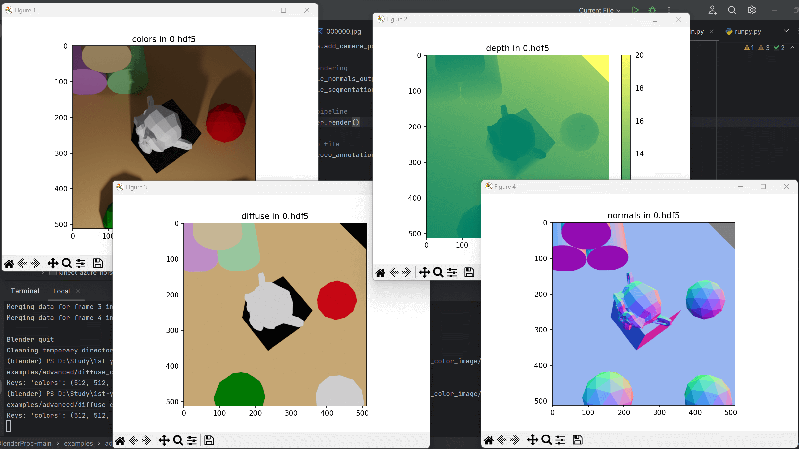
Code
# Also enable the diffuse color image, which describes the base color of the textures
bproc.renderer.enable_diffuse_color_output()How to apply dust to objects
Usage
blenderproc run examples/advanced/dust/main.py resources/haven/models/ArmChair_01/ArmChair_01_2k.blend resources/haven examples/datasets/haven/outputexamples/advanced/dust/main.py: path to the main python file to run.resources/haven/models/ArmChair_01/ArmChair_01.blend: Path to the blend file, from the haven dataset, browse the model folder, for all possible optionsresources/haven: The folder where thehdrifolder can be found, to load an world environmentexamples/datasets/haven/output: path to the output directory.
这玩意儿老是坑，妈的
从 Little Paris Eiffel Tower HDRI • Poly Haven 里下载一些 Models 和 HDRIS：
{kind=link}
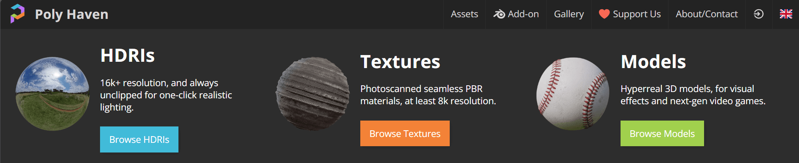
这个网站的资源都是开源免费的，不错啊！
{kind=link}
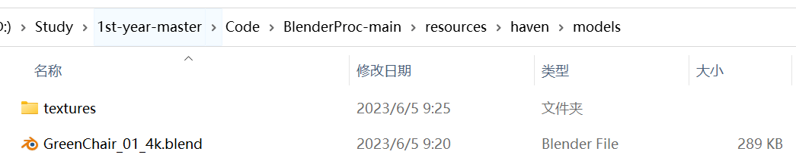
{kind=link}
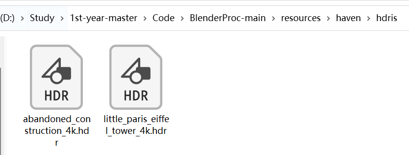
设置好路径开跑！
blenderproc run examples/advanced/dust/main.py resources/haven/models/GreenChair_01_4k.blend D:\Study\1st-year-master\Code\BlenderProc-main\resources\haven examples/datasets/haven/output然后就寄，不明白为什么这里 glob.glob 会返回空列表，换个代码重写，然后这坨臭臭代码就能跑了。
{kind=link}
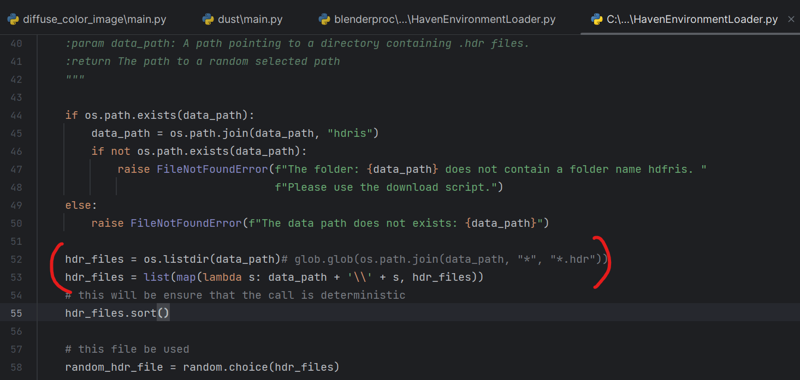
Visualization
blenderproc vis hdf5 examples/datasets/haven/output/0.hdf5{kind=link}
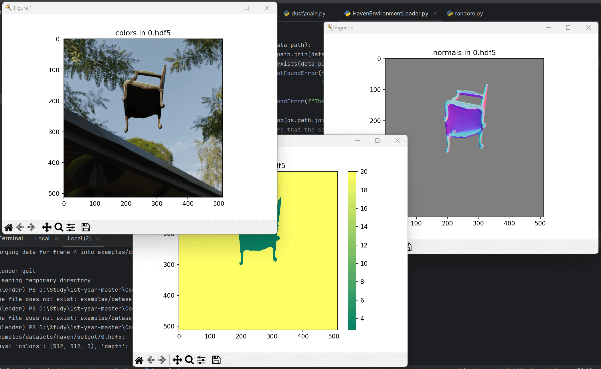
Code
# load the objects into the scene
obj = bproc.loader.load_blend(args.model)[0]
haven_hdri_path = bproc.loader.get_random_world_background_hdr_img_path_from_haven(args.hdri_path)
bproc.world.set_world_background_hdr_img(haven_hdri_path)
- 使用
bproc.loader.load_blend(args.model)函数加载在args.model变量中指定的 Blender 模型文件。该函数返回一个对象列表，我们将其中的第一个对象存储在变量obj中。- 使用
bproc.loader.get_random_world_background_hdr_img_path_from_haven(args.hdri_path)函数从指定的路径中获取一个随机的 HDR 图像文件路径。该函数会检查args.hdri_path目录下的所有.hdr文件，并从中随机选择一个返回。- 最后，使用
bproc.world.set_world_background_hdr_img(haven_hdri_path)函数，将选择的 HDR 图像文件路径设置为 Blender 环境的背景图像。这使得 3D 模型文件与所选择的 HDR 图像组合成为一个逼真的场景。
# Add dust to all materials of the loaded object
for material in obj.get_materials():
bproc.material.add_dust(material, strength=0.8, texture_scale=0.05)这段代码的作用是向已经加载到 Blender 中的模型对象的所有材质（material）中添加灰尘效果。
具体而言，代码执行了以下几个步骤：
使用
obj.get_materials()方法从obj对象中获取所有的材质，并使用for循环遍历每一个材质。在循环中，使用
bproc.material.add_dust(material, strength=0.8, texture_scale=0.05)函数向当前遍历的材质中添加灰尘。该函数接受三个参数：
material：要添加灰尘的材质对象。strength：灰尘的强度，默认为 0.5。texture_scale：灰尘纹理的缩放比例，默认为 0.01。相关的代码将根据这些参数将灰尘纹理应用于材质，从而使其看起来更加逼真。
因此，这段代码使您能够轻松地向已经加载到 Blender 中的模型对象添加灰尘效果，从而使其看起来更加逼真。
Object selection and manipulation using displacement modifier
该示例演示了如何使用不同纹理添加不同位移修饰符作为 EntityManipulator 模块的一部分来操作实体。
Usage
blenderproc run examples/advanced/entity_displacement_modifier/main.py examples/resources/scene.obj examples/advanced/entity_displacement_modifier/outputVisualization
blenderproc vis hdf5 examples/advanced/entity_displacement_modifier/output/0.hdf5{kind=link}
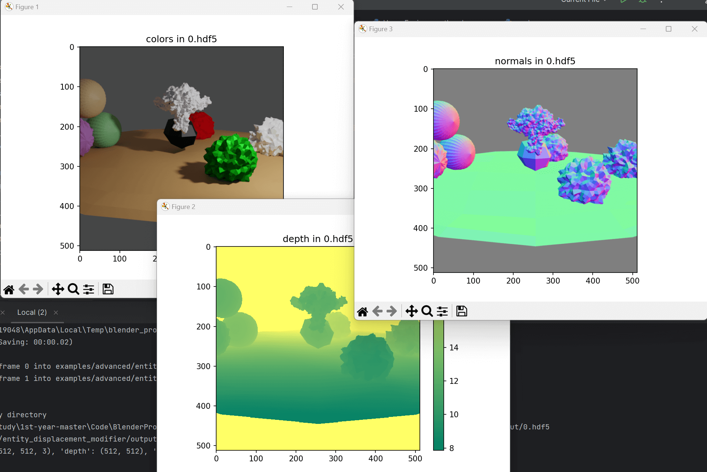
Code
# Add displacement to all objects
for obj in objs:
# Create a uv mapping based on a cylinder projection
obj.add_uv_mapping("cylinder")
# Create a random procedural texture
texture = bproc.material.create_procedural_texture('CLOUDS')
# Displace the vertices of the object based on that random texture
obj.add_displace_modifier(
texture=texture,
strength=random.gauss(0, 0.5),
subdiv_level=random.randint(1, 3),
)如果一个对象没有 UV 映射，我们将添加一个，因为它对于将位移纹理映射到对象是必要的。对于 UV 映射，我们选择使用 projection。Blender 给出的可能的投影类型有："cube"、"cylinder"、"smart" 和 "sphere"。
然后，我们为每个实体添加了一个带有随机纹理的位移修饰符。
strength是几何体位移的量。我们在这里使用高斯分布对strength进行采样，均值为0.0，标准差为0.5。- 如果应用子细分，则
subdiv_level定义要在实体上执行的子细分数量。在本示例中，我们使用了一个或两个子细分。 mid_level是文理值，将被处理为无位移的修饰符。纹理值低于此阈值将导致沿所选方向的负位移，而高于此阈值的纹理值将导致正位移。displacement = texture_value - mid_level。请记住，在 Blender 中，颜色/亮度值通常在（0.0 到 1.0）之间，而不是（0 到 255）之间。- 通过添加一个值到
min_vertices_for_subdiv，我们可以检查实体是否需要子细分修饰符。如果实体的顶点少于min_vertices_for_subdiv，则会添加一个 Subdivision 材质，以增加顶点的数量。实体的顶点数对于位移修饰符有很大的影响。如果顶点不足，则位移修饰符效果不好。
Camera lens distortion generation and validation
该程序会生成典型的 BlenderProc 虚拟场景和已知姿态和内参的精确测量的相机校准板的扭曲图像（RGB、深度和法线）。后者将用于验证我们的几何相机模型，通过比较生成的图像与真实图像。
emmmm 这个我应该用不到。
Usage
Standard Scene：
blenderproc run examples/advanced/lens_distortion/main.py examples/resources/scene.obj examples/advanced/lens_distortion/output{kind=link}
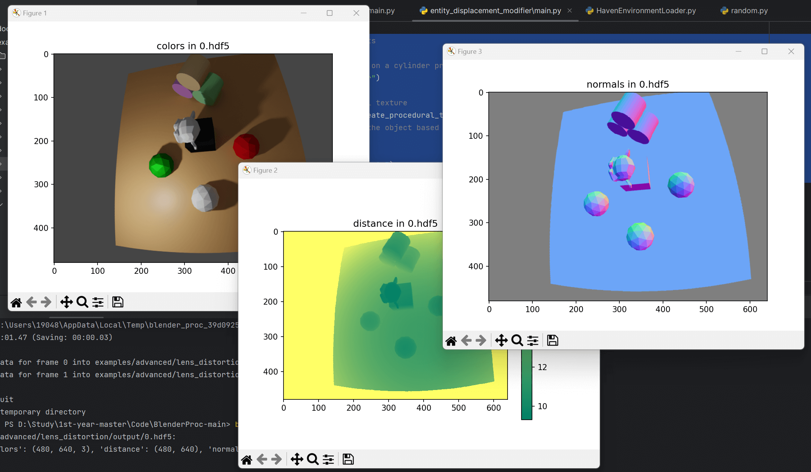
simple calibration image by loading intrinsics and extrinsics from a file:
blenderproc run examples/advanced/lens_distortion/main_callab.py examples/advanced/lens_distortion/callab_platte.obj examples/advanced/lens_distortion/camera_calibration_callab_img1.cal examples/advanced/lens_distortion/output{kind=link}
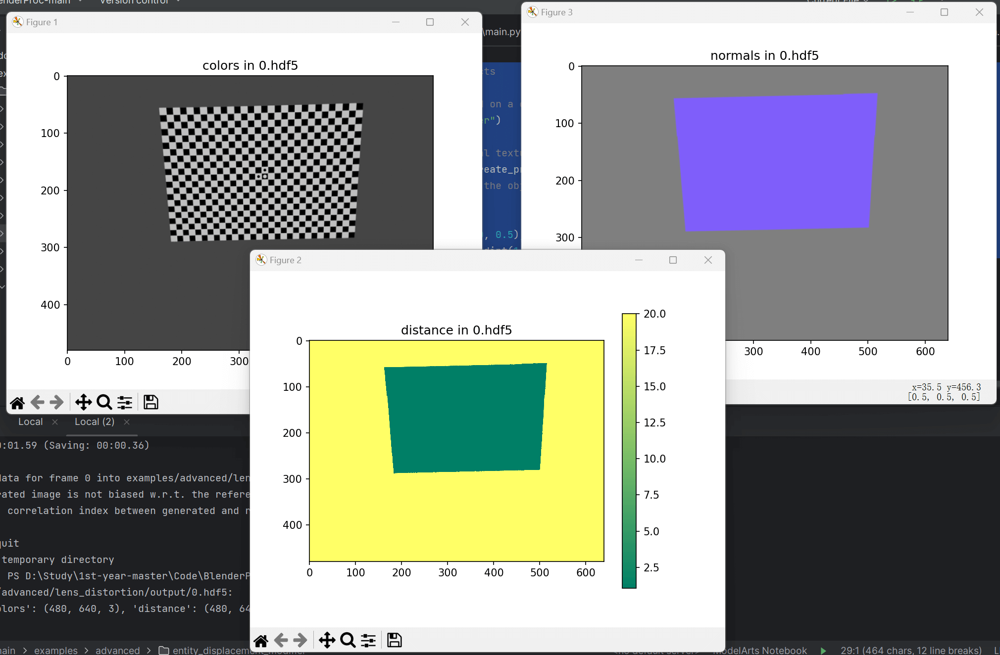
fairly distorted image:
blenderproc run examples/advanced/lens_distortion/main_callab.py examples/advanced/lens_distortion/callab_platte_justin.obj examples/advanced/lens_distortion/camera_calibration_callab_img2.cal examples/advanced/lens_distortion/output{kind=link}
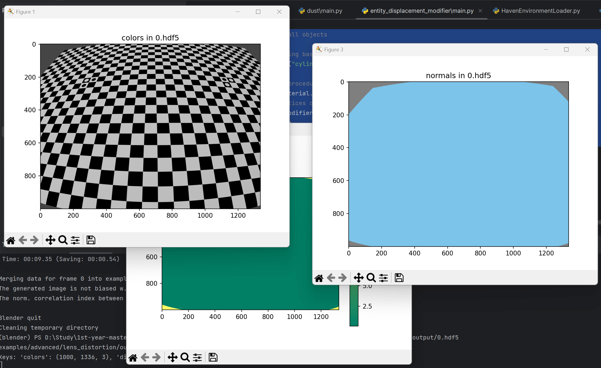
- 加载对象；将它们定位到世界参考帧的原点。
- 创建一个点光源。
- 设置相机内参，包括镜头畸变参数。
- 初始化所有生成的无畸变图像（通常比所需的分辨率更高）的无畸变到畸变坐标映射，最终将其进行扭曲。
- 对于第一个示例，或者加载使用相机校准软件（例如 DLR CalLab v1）测量得到的相机姿态，对相机与物体姿态进行采样。
- 渲染 RGB、深度和法线图像。
- 应用镜头畸变（对于时间上的、高分辨率的中间 Blender 图像），然后将它们裁剪到所需的分辨率。
- 将畸变数据写入 .hdf5 容器。
- 通过将生成的图像与参考真实图像
./images/lens_img1_real.jpg和./images/lens_img2_real.png进行比较来进行测试。
Material Randomization
Usage
blenderproc run examples/advanced/material_randomizer/main.py examples/resources/scene.obj examples/advanced/material_randomizer/outputexamples/advanced/material_randomizer/main.py: path to the main python file to run.examples/resources/scene.obj: path to the object file with the basic scene.examples/advanced/material_randomizer/output: path to the output directory.
Visualizaton
多次运行结果，Material 一般不同：
{kind=link}
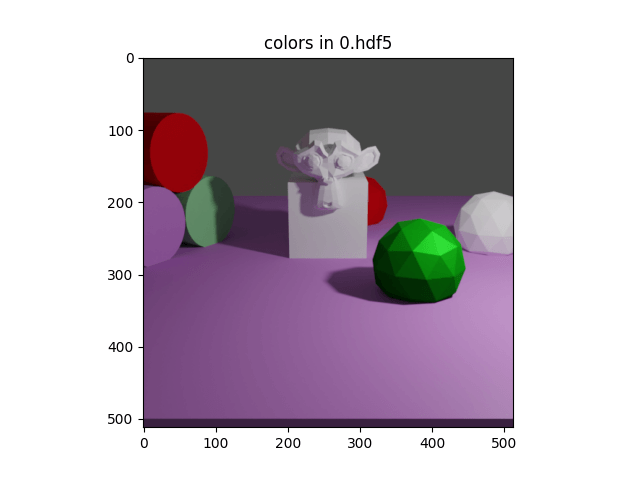
{kind=link}
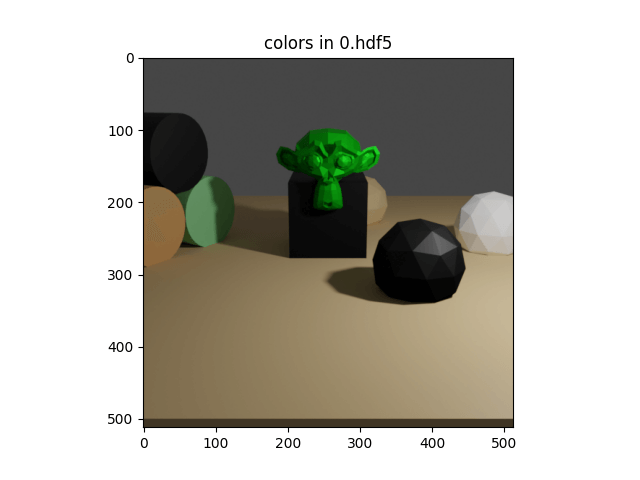
Code
# Collect all materials
materials = bproc.material.collect_all()
# Go through all objects
for obj in objs:
# For each material of the object
for i in range(len(obj.get_materials())):
# In 50% of all cases
if np.random.uniform(0, 1) <= 0.5:
# Replace the material with a random one
obj.set_material(i, random.choice(materials))这段代码的作用是对已经加载到 Blender 中的所有对象进行操作，随机替换这些对象的材质。
具体而言，代码执行了以下几个步骤：
- 首先使用
for obj in objs:循环遍历所有在 Blender 环境中加载的对象，并对每个对象执行以下操作。- 在循环中，对于当前遍历对象的每一个材质，使用
for i in range(len(obj.get_materials())):进行循环遍历。- 在每次循环中，使用
np.random.uniform(0, 1)函数生成一个 0 到 1 之间的随机数，并判断是否小于等于 0.5，即 50% 的概率。如果是，则执行以下操作。- 使用
obj.set_material(i, random.choice(materials))函数将当前遍历的材质替换为从materials列表中随机选择的一个材质。其中，materials列表是预先定义的包含多种材质的列表。因此，这段代码使您能够轻松地对已经加载到 Blender 中的所有对象进行操作，并以一定的概率随机更改它们的材质，可以为渲染器提供更丰富和多样化的渲染效果。
Motion Blur and Rolling Shutter
在这个例子中，我们展示如何生成运动模糊和滚动快门效果。
这些效果是可见的，如果相机或对象在帧之间移动。相机在物体静止的情况下经历以下运动：
0 -10 4 1.3 0 0 # initial position
0 -15 4 1.3 0 0 # moving away from object
5 -15 4 1.3 0 0 # moving to the right
5 -15 8 1.3 0 0 # moving upwards
1 -11 5 1.3 0 0 # combined motion (to the left, towards object and downwards)Usage
blenderproc run examples/advanced/motion_blur_rolling_shutter/config_motion_blur.yaml examples/advanced/motion_blur_rolling_shutter/camera_positions examples/resources/scene.obj examples/advanced/motion_blur_rolling_shutter/output跑不动，西内。
Object pose sampling
这个例子的重点是介绍 object.ObjectPoseSampler，它允许在采样体积内进行带有碰撞检查的对象姿态采样。
Usage
blenderproc run examples/advanced/object_pose_sampling/main.py examples/resources/camera_positions examples/resources/scene.obj examples/advanced/object_pose_sampling/outputexamples/advanced/object_pose_sampling/main.py: path to the main python file to run.examples/resources/camera_positions: text file with parameters of camera positions.examples/resources/scene.obj: path to the object file with the basic scene.examples/advanced/object_pose_sampling/output: path to the output directory.
Visualization
blenderproc vis hdf5 examples/advanced/object_pose_sampling/output/0.hdf5{kind=link}
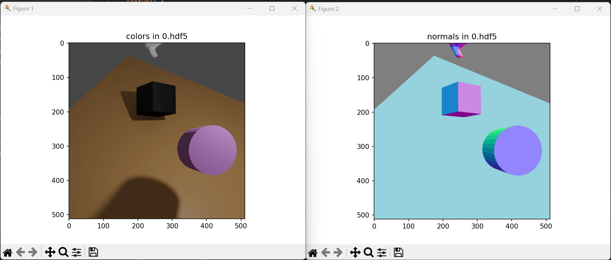
Code
# Define a function that samples the pose of a given object
def sample_pose(obj: bproc.types.MeshObject):
obj.set_location(np.random.uniform([-5, -5, -5], [5, 5, 5]))
obj.set_rotation_euler(np.random.uniform([0, 0, 0], [np.pi * 2, np.pi * 2, np.pi * 2]))
# Sample the poses of all objects, while making sure that no objects collide with each other.
bproc.object.sample_poses(
objs,
sample_pose_func=sample_pose,
objects_to_check_collisions=objs
)定义一个函数，采样并设置对象的位置和旋转。对象被放置在采样的姿态上，并对 objects_to_check_collisions 指定的所有对象执行碰撞检查（默认为所有对象）。如果发生碰撞，位置将被重置，并尝试重新采样。最大尝试次数可以由 max_tries 定义。
On surface object pose Sampling
这个示例的重点是 OnSurfaceSampler，它允许对所选表面上的某些对象进行姿态采样。
Usage
blenderproc run examples/advanced/on_surface_object_sampling/main.py examples/resources/camera_positions examples/advanced/on_surface_object_sampling/scene.blend examples/advanced/on_surface_object_sampling/outputexamples/advanced/on_surface_object_sampling/main.py: path to the main python file to run.examples/resources/camera_positions: text file with parameters of camera positions.examples/advanced/on_surface_object_sampling/scene.blend: path to the object file with the basic scene.examples/advanced/on_surface_object_sampling/output: path to the output directory.
Visualization
blenderproc vis hdf5 examples/advanced/on_surface_object_sampling/output/0.hdf5{kind=link}
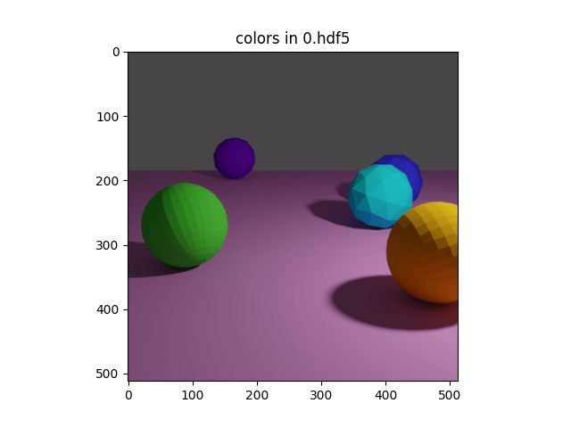
{kind=link}
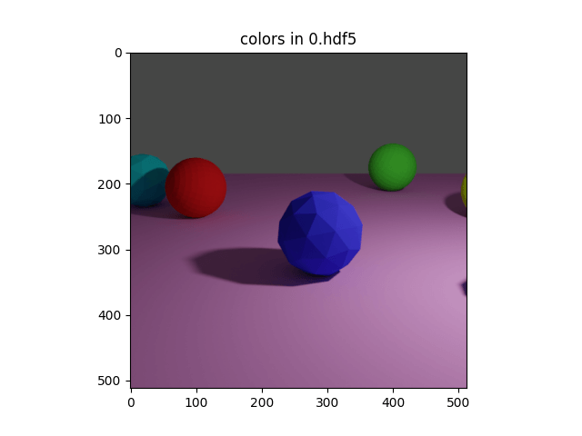
Code
# Define a function that samples the pose of a given object
def sample_pose(obj: bproc.types.MeshObject):
# Sample the spheres location above the surface
obj.set_location(bproc.sampler.upper_region(
objects_to_sample_on=[surface],
min_height=1,
max_height=4,
use_ray_trace_check=False
))
obj.set_rotation_euler(np.random.uniform([0, 0, 0], [np.pi * 2, np.pi * 2, np.pi * 2]))这段代码的作用是定义一个函数 sample_pose，并使用该函数对已经加载到 Blender 中的模型对象进行姿态采样操作。
具体而言，代码执行了以下几个步骤：
- 首先定义了一个名为
sample_pose的函数，函数的输入参数为一个bproc.types.MeshObject类型的对象obj，表示需要进行姿态采样的模型对象。函数内部执行了以下操作：- 使用
bproc.sampler.upper_region()函数对当前对象进行位置采样，生成一个位置矢量，并使用obj.set_location()方法将该位置矢量设置为当前模型对象的位置。在此处，我们使用以下参数配置：objects_to_sample_on：一个List[bproc.types.Object]类型的列表，表示采样参考物体的集合。在这里，我们将表面 object 添加到采样参考物体中。min_height和max_height：分别表示采样位置的最小高度和最大高度。在这里，我们将其设为 1 和 4，表示采样位置在表面 object 的上方 1 到 4 个单位长度之间。use_ray_trace_check：一个布尔值，表示是否使用光线跟踪检查避免生成的位置与其他物体相交。在这里，我们将其设置为 False，即不进行光线跟踪检查。
- 使用
np.random.uniform([0, 0, 0], [np.pi * 2, np.pi * 2, np.pi * 2])函数生成一个随机欧拉角矢量，并使用obj.set_rotation_euler()方法将该欧拉角矢量设置为当前模型对象的旋转。
- 使用
- 在完成函数定义后，该函数可以用于对已经加载到 Blender 中的模型对象进行位置采样和姿态采样操作，从而增加渲染效果的多样性和逼真性，特别是当需要将某个物体放置在表面上方时。
因此，这段代码提供了一种简单的方法来对模型对象进行采样操作，并可扩展成复杂的采样逻辑，从而为渲染器提供更加丰富和逼真的场景渲染效果。
# Sample the spheres on the surface
spheres = bproc.object.sample_poses_on_surface(spheres, surface, sample_pose, min_distance=0.1, max_distance=10)设置刚体：
# Enable physics for spheres (active) and the surface (passive)
for sphere in spheres:
sphere.enable_rigidbody(True)
surface.enable_rigidbody(False)物理模拟：
# Run the physics simulation
bproc.object.simulate_physics_and_fix_final_poses(min_simulation_time=2, max_simulation_time=4, check_object_interval=1)Optical Flow
在本示例中，我们演示了如何获取连续关键帧之间的前向/后向流值。
如果相机或物体在帧之间移动，则流会变得可见。在这里，相机经过以下运动：
0 -10 4 1.3 0 0 # initial position
0 -12 4 1.3 0 0 # moving away from object
2 -12 4 1.3 0 0 # moving to the right
2 -12 6 1.3 0 0 # moving upwards
1 -11 5 1.3 0 0 # combined motion (to the left, towards object and downwards)Usage
blenderproc run examples/advanced/optical_flow/main.py examples/advanced/optical_flow/camera_positions examples/resources/scene.obj examples/advanced/optical_flow/outputexamples/advanced/optical_flow/main.py: path to the main python file to run.examples/advanced/optical_flow/camera_positions: text file with parameters of camera positions.examples/resources/scene.obj: path to the object file with the basic scene.examples/advanced/optical_flow/output: path to the output directory.
Usage
blenderproc vis hdf5 examples/advanced/optical_flow/output/1.hdf5{kind=link}
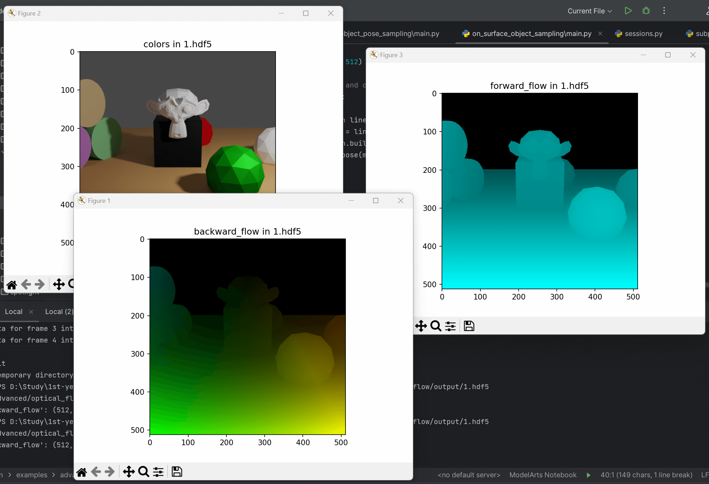
Code
# Render the optical flow (forward and backward) for all frames
data.update(bproc.renderer.render_optical_flow(get_backward_flow=True, get_forward_flow=True, blender_image_coordinate_style=False))- 遍历所有相机位姿并渲染前向和/或后向光流。
- 使用
.exr格式渲染图像，该格式允许线性颜色空间和更高的精度，然后将其转换为numpy.float32数组。 - 默认情况下，Blender 使用左下角作为坐标系统原点。OpenCV 和流行的 Flow 数据集使用上部左角。如果要使用默认的 Blender 行为，请更改标志
"blender_image_coordinate_style": True。请注意，可视化中的颜色将不同！
Convex decomposition for generating stable and exact collision shapes
在 Blender 中运行物理模拟时，选择正确的碰撞形状对于实现稳定结果至关重要。虽然使用 CONVEX_HULL 碰撞形状可以获得非常稳定的模拟结果，但对于非凸面体对象（例如，浮动的物体），结果可能看起来非常不切实际。MESH 碰撞形状允许进行更精确的碰撞，但模拟也会变得非常不稳定，物体可能会相互穿透。
CONVEX_DECOMPOSITION 是两者之间的折衷方案：使用 V-HACD 算法 将给定的非凸面体对象分解成多个近似凸部分。这些部分的并集可以用作物体的精确且稳定的碰撞形状。
在这个例子中，我们加载了一个垃圾箱和一些高度非凸面体的 ShapeNet 对象，应用凸分解生成碰撞形状，然后让这些物体掉进垃圾箱里。
不好下数据集+感觉用不到，give up！
Random Backgrounds
{kind=link}
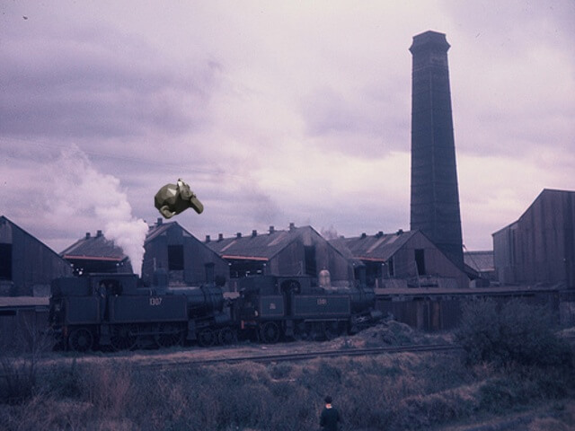
在这个例子中，我们生成了一个物体 (Suzanne) 的渲染图像，并将它们粘贴到随机的背景图像上，随机化对象的位置、方向、材质属性和照明。这是一种简单的方法来生成用于训练分类、物体检测和分割任务的数据。它易于实现和使用，但与实际 3D 场景中的物体渲染相比通常会导致较差的结果。
Usage
blenderproc run examples/advanced/random_backgrounds/main.py examples/advanced/random_backgrounds/object.ply examples/advanced/random_backgrounds/outputexamples/advanced/random_backgrounds/main.py: path to the main python file to run.examples/advanced/random_backgrounds/object.ply: path to the object file.examples/advanced/random_backgrounds/output: path to the output directory.
emmm就是渲染一个不含背景的图片，然后把背景换成其他的。
然后再：
python examples/advanced/random_backgrounds/paste_images_on_backgrounds.py --images examples/advanced/random_backgrounds/output/coco_data/images --backgrounds path/to/background/images --overwrite添加背景。
Code
# Enable transparency so the background becomes transparent
bproc.renderer.set_output_format(enable_transparency=True)这段代码的作用是启用 Blender 内置渲染器的透明背景功能，使得渲染输出结果中的背景变为透明的。
具体而言，代码执行了以下操作：
- 首先调用了
bproc.renderer模块下的set_output_format()函数，该函数用于设置渲染输出格式。在此，我们设置了一个参数enable_transparency=True，用于启用透明背景功能。- 启用透明背景功能后，当使用 Blender 渲染器进行渲染时，原本的背景将会被自动设为透明色，从而能够与其他软件进行无缝合成和叠加。
因此，这段代码可以帮助您快速启用 Blender 渲染器的透明背景功能，方便进行后续的图像处理和合成操作。
Random Room Constructor
这个例子解释了 RandomRoomConstructor。该模块可以构建随机房间，并在其中放置从其他模块加载的对象。
本例使用了 CCMaterialLoader。所以要下载 cc_textures 的纹理，我们提供了一个脚本。它还使用了 IkeaLoader，请参见 Ikea 的例子。
这两者都需要使用才能使用此示例。
又不好下载，give up!
Code
# Load materials and objects that can be placed into the room
materials = bproc.loader.load_ccmaterials(args.cc_material_path, ["Bricks", "Wood", "Carpet", "Tile", "Marble"])
interior_objects = []
for i in range(15):
interior_objects.extend(bproc.loader.load_ikea(args.ikea_path, ["bed", "chair", "desk", "bookshelf"]))通过脚本下载了 cctextures，这里仅使用名称列表中包含其中一个名称的资产。这使得它更加真实，因为像 "Asphalt" 这样的东西通常不会在室内发现。此外，也从指定的 Ikea 数据集类别中加载了 15 个对象。
# Construct random room and fill with interior_objects
objects = bproc.constructor.construct_random_room(used_floor_area=25,
interior_objects=interior_objects,
materials=materials, amount_of_extrusions=5)construct_random_room 构建了一个随机的地面平面，并构建了相应的墙壁和天花板。它将加载的 Ikea 对象随机放置在位置，并设置 cc-texture 材料。房间的地面面积为 25 平方米，它最多有 5 个挤出。挤出是一种走廊，它从中间的基本矩形中伸出。它们可以更宽或更窄，但永远不会小于最小的 corridor_width。模块将自动将 25 平方米分配到所有挤出部分中。
# Bring light into the room
bproc.lighting.light_surface([obj for obj in objects if obj.get_name() == "Ceiling"], emission_strength=4.0)让天花板发光，并移除放置在其上的任何材料。